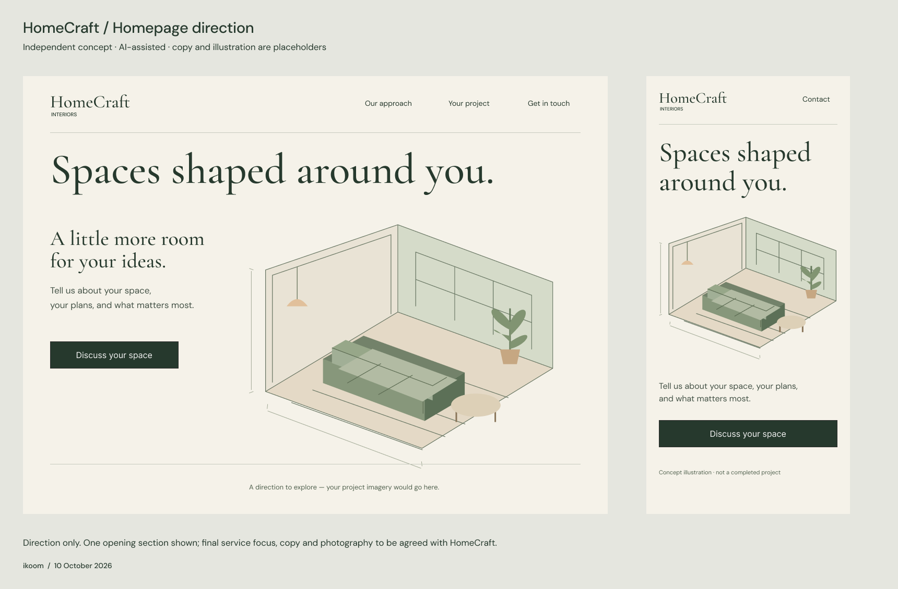

A small, independent, AI-assisted concept by ikoom. Copy and illustration are placeholders. Final service focus, brand assets and photography require HomeCraft’s input. Desktop and mobile layouts were built as editable Figma layers.
Open full-size preview